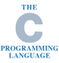

Ваш язык программирования - C!

Компилируемый статически типизированный язык программирования общего назначения, разработанный в 1969—1973 годах сотрудником Bell Labs Деннисом Ритчи как развитие языка Би. Первоначально был разработан для реализации операционной системы UNIX, но впоследствии был перенесён на множество других платформ. Согласно дизайну языка Си, его конструкции близко сопоставляются типичным машинным инструкциям, благодаря чему он нашёл применение в проектах, для которых был свойственен язык ассемблера, в том числе как в операционных системах, так и в различном прикладном ПО для множества устройств — от суперкомпьютеров до встраиваемых систем. Язык программирования Си оказал существенное влияние на развитие индустрии программного обеспечения, а его синтаксис стал основой для таких языков программирования, как C++, C#, Java и Objective-C.